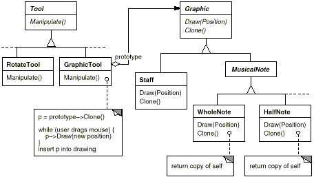
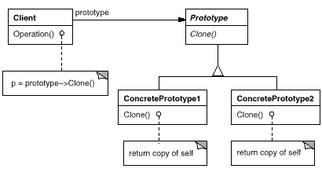

class MazePrototypeFactory : public MazeFactory {
public:
MazePrototypeFactory(Maze*, Wall*, Room*, Door*);
virtual Maze* MakeMaze() const;
virtual Room* MakeRoom(int) const;
virtual Wall* MakeWall() const;
virtual Door* MakeDoor(Room*, Room*) const;
private:
Maze* _prototypeMaze;
Room* _prototypeRoom;
Wall* _prototypeWall;
Door* _prototypeDoor;
};
新たなコンストラクタは、単に prototype を初期化するだけである。
壁、部屋、ドアを生成するメンバ関数は互いに類似している。すなわち、それらは prototype の複製と初期化を行う。MakeWall と MakeDoor の定義を次に示す。
MazePrototypeFactory オブジェクトを、迷路の基本要素の prototype で初期化すれば、原型となる迷路をデフォルトで作成することができる。
他の迷路を作成する場合には、MazePrototypeFactory オブジェクトを別の prototype で初期化すればよい。次の例では、BombedDoor オブジェクトと RoomWithABomb オブジェクトを使って迷路を生成している。
Wall クラスのように、そのインスタンスを prototype として使うことのできるクラスは、Clone オペレーションを提供していなければならない。また、複製のためのコピーコンストラクタも持たなければならない。さらに、内部状態を再初期化するためのオペレーションが必要になる場合もある。Client オブジェクトが複製の Door オブジェクトのメンバ変数を初期化できるように、Door クラスに Initialize オペレーションを追加する。
BombedWall クラスでは、コピーコンストラクタを適切に実装して、これを使って Clone オペレーションをオーバーライドしなければならない。
BombedWall::CloneはWall*を返すように宣言されているが、その実装ではサブクラスの新たなインスタンスへのポインタ、すなわち BombedWall*が返されることになる。Clone オペレーションをこのように定義した理由は、prototype の複製を行う Client オブジェクトが具象サブクラスを知らなくても済むようにするためである。Client オブジェクトの側では、Clone オペレーションの返却値を望む型にダウンキャストしなくてもよいようにしておくべきである。
MazeFactory オブジェクトを prototype で初期化するための適当なメソッドがそろっているとすると、次のようなコードで簡単な迷路を作成することができる。
CreateMaze メソッドの中で使用するクラスメソッド on: の定義は次のようになる。
MazePrototypeFactory::MazePrototypeFactory (
Maze* m, Wall* w, Room* r, Door* d
) {
_prototypeMaze = m;
_prototypeWall = w;
_prototypeRoom = r;
_prototypeDoor = d;
}
Wall* MazePrototypeFactory::MakeWall () const {
return _prototypeWall->Clone();
}
Door* MazePrototypeFactory::MakeDoor (Room* r1, Room *r2) const {
Door* door = _prototypeDoor->Clone();
door->Initialize(r1, r2);
return door;
}
MazeGame game;
MazePrototypeFactory simpleMazeFactory(
new Maze, new Wall, new Room, new Door
);
Maze* maze = game.CreateMaze(simpleMazeFactory);
MazePrototypeFactory bombedMazeFactory(
new Maze, new BombedWall,
new RoomWithABomb, new Door
);
次の Door クラスの定義を91ページの定義と比較してみてほしい。
class Door : public MapSite {
public:
Door();
Door(const Door&);
virtual void Initialize(Room*, Room*);
virtual Door* Clone() const;
virtual void Enter();
Room* OtherSideFrom(Room*);
private:
Room* _room1;
Room* _room2;
};
Door::Door (const Door& other) {
_room1 = other._room1;
_room2 = other._room2;
}
void Door::Initialize (Room* r1, Room* r2) {
_room1 = r1;
_room2 = r2;
}
Door* Door::Clone () const {
return new Door(*this);
}
class BombedWall : public Wall {
public:
BombedWall();
BombedWall(const BombedWall&);
virtual Wall* Clone() const;
bool HasBomb();
private:
bool _bomb;
};
BombedWall::BombedWall (const BombedWall& other) : Wall(other) {
_bomb = other._bomb;
}
Wall* BombedWall::Clone () const {
return new BombedWall(*this);
}
Smalltalk では、任意の MapSite のオブジェクトの複製を行うために、Object クラスから継承される標準的な copy メソッドを利用することができる。必要な prototype の複製を行うためには、MazeFactory クラスを使うことができる。たとえば、#room という名前を与えて部屋のオブジェクトを生成することができる。MazeFactory オブジェクトには名前と prototype の対応関係を示す辞書が保持されている。そこで make: メソッドは次のようになる。
make: partName
^ (partCatalog at: partName) copy
CreateMaze
on: (MazeFactory new
with: Door new named: #door;
with: Wall new named: #wall;
with: Room new named: #room;
yourself)
on: aFactory
| room1 room2 |
room1 := (aFactory make: #room) location: 1@1.
room2 := (aFactory make: #room) location: 2@1.
door := (aFactory make: #door) from: room1 to: room2.
room1
atSide: #north put: (aFactory make: #wall);
atSide: #east put: door;
atSide: #south put: (aFactory make: #wall);
atSide: #west put: (aFactory make: #wall).
room2
atSide: #north put: (aFactory make: #wall);
atSide: #east put: (aFactory make: #wall);
atSide: #south put: (aFactory make: #wall);
atSide: #west put: door.
^ Maze new
addRoom: room1;
addRoom: room2;
yourself